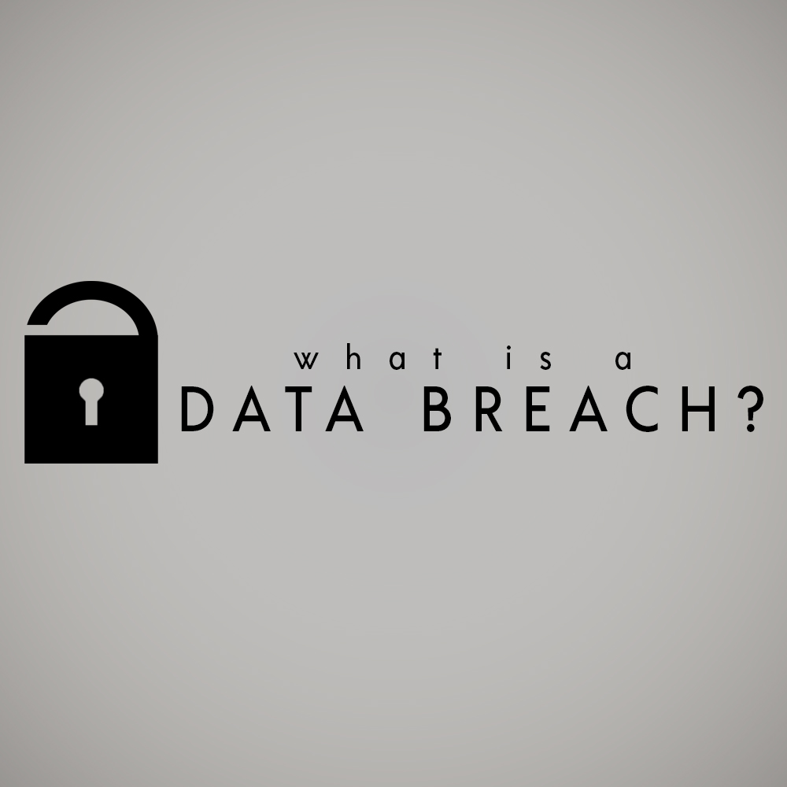
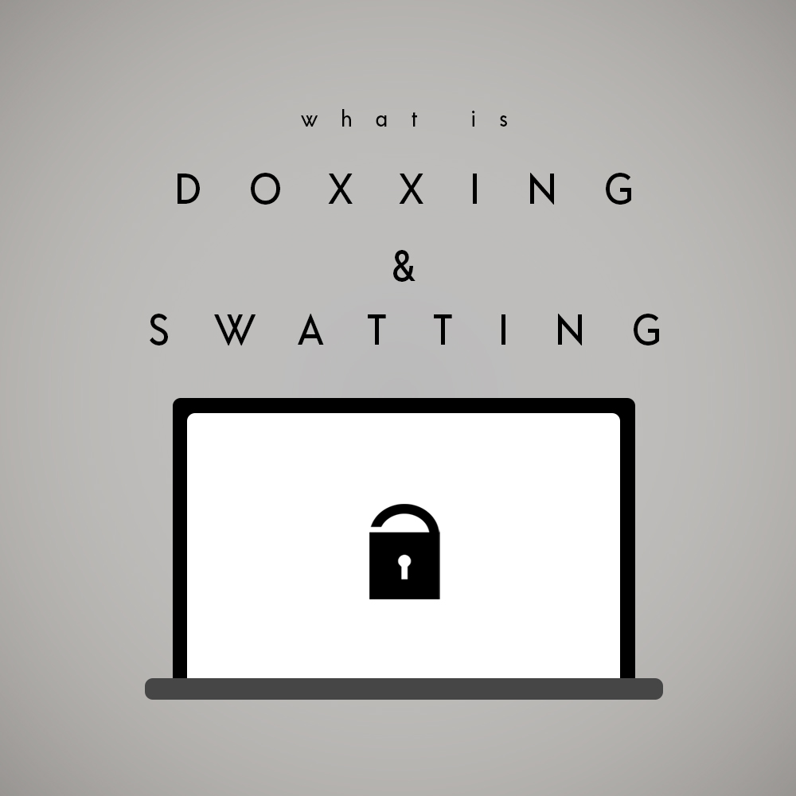
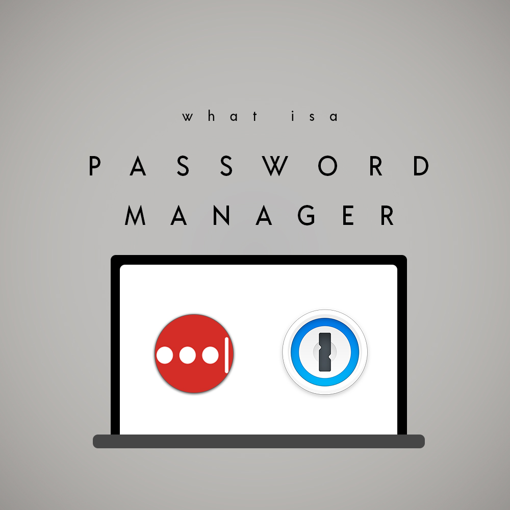
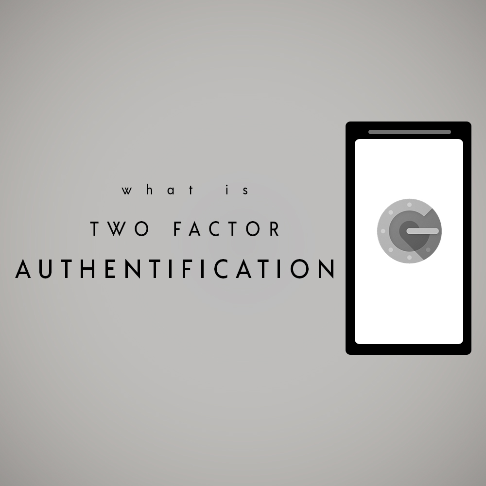
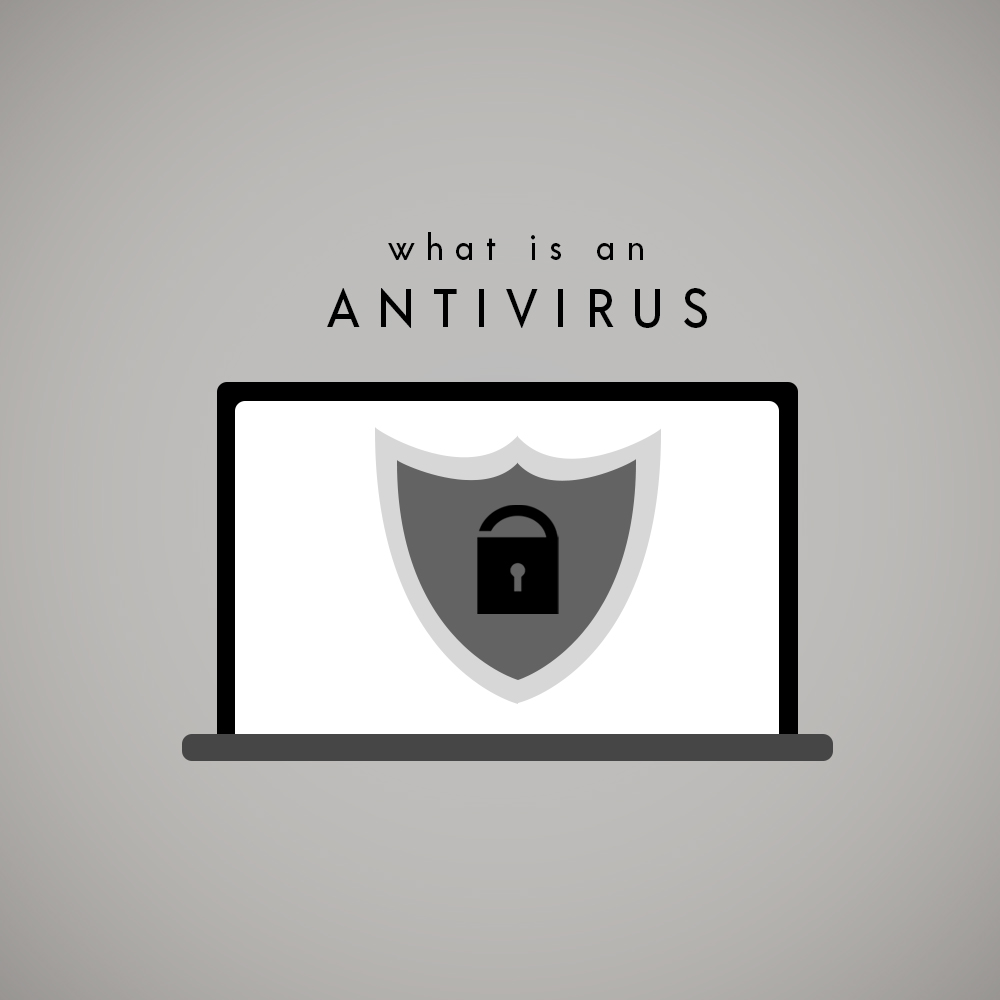

Daily Tech Tips
Daily technology news and updates.
Data Privacy
In an age of a growing internet presence, it almost feels like we can’t avoid being exposed to
the many mediums of media. Everything becomes immortalized once it reaches the internet, your private information
is no exception to that rule. In 2018 Facebook caught a lot of negative press for their way of handling user data.
Not only were they consistently collecting user data, but they sold that information to third party companies who would
use it to try and sell products or potentially create scam robocallers. Since this scandal broke public headlines numerous
companies have made a change to their terms and conditions. All of which very clearly state that either they will never
sell your information to their parties, or expressing why this information may be shared at all. The conversation on digital
privacy has become an increasingly popular topic within the news and politics with the rise in cyber crimes. Crimes such as
doxxing and swatting have caused people to lose their lives such as the Kansas man who was shot by a cop after a false swatting
call caused by an online dispute. The capabilities of the internet are near limitless and if you aren’t somebody who feels it
necessary to be completely attentive to their digital footprint, here is a list of reasons why you should.

Data Breaches
A data breach is when sensitive information is gained without authorization. Data breaches harm both businesses and customers in numerous ways. Data breaches can negatively impact the lives of those involved. In these data breaches personal information that is stored on these websites becomes a public domain depending on the perpetrators intentions. Most of the time a data breach occurs in order to steal credit card information, however sometimes it can be much more dangerous with criminals going as far as stealing identities. Sometimes data breaches aren't done by sole perpetrators and instead may happen as a result of faulty software. In January 2019, Epic Games, the creators of Fortnite, was under fire for having exposed the credit card information of multiple customers as a result of a glitch. This breach was identified by a collective known as Check Point, their goal was to identify the problem and notify Epic Games as soon as possible. What is unfortunate for some is that this glitch was already being abused and numerous customers had their credit information breached which resulted in fraudulent purchases.
Online Immortality
Everything you post online with stay there forever. The photos you post of yourself, the many updates you make to your social media statuses, all of it is immortalized on the internet. There is no way of avoiding this large breach of privacy besides just never making an account in the first place. However for those who are already invested in their social image this may not be possible. In fact being a social influencer is more and more common than ever and without having some sort of social media in place for all your fans to find your daily thoughts, you wouldn't be making much money. Online Immortality isn't inherently bad though, there is plenty good to go with it, for example the Tiannamen Square Massacre that took place in China many years ago. The Chinese government has tried to surpress the information and images from that day, but since these images are on the internet, and there are people willing to keep it from fading into notoriety, those photos and those stories will be here for as long as the internet lives.
But don't let that fool you. Online immortality can just as well be dangerous with the sensitive photos you may have taken when you were younger and in a more vulnerable place can be used against you in very personally harming ways. Or possibly a risque vacation that you decided to take with a significant other can be exploited for the use of somebodies anonymous advertising. The photos you post stop being your photos the second you press submit, and they will not leave the internet. Celebrities such as James Gunn have first hand experience with how online immortality can have a disaterous effect on your career. Gunn was fired from his position as director with Disney over twitter posts he had made many, many years prior, that were since deleted, still recoverable on the internet. Though Gunn was rehired the impact of this situation was felt worldwide as people started to question just how much what we say can affect our lives in the future.

Doxxing and Swatting
Doxxing and Swatting are one of the more dangerous combinations of data privacy breaches. In order to understand the two and why they go hand in hand you must know what they are individually. Doxxing is the act of having your personal information sought after and recieved by scouring for your social media and taking information about you from there. Doxxers would then take that information to learn about you through what you post, search your name online to possibly find previous addresses, or worse, find your current residence. Doxxing can often happen as a mistake if people have had their information leaked online by a friend or possibly a company.

Password Managers
Data breaches are one of the number one ways for private information to reach other platforms. Doxxing and Swatting are one of the more dangerous combinations of data privacy breaches. In order to understand the two and why they go hand in hand you must know what they are individually. Doxxing is the act of having your personal information sought after and recieved by scouring for your social media and taking information about you from there. Doxxers would then take that information to learn about you through what you post, search your name online to possibly find previous addresses, or worse, find your current residence. Doxxing can often happen as a mistake if people have had their information leaked online by a friend or possibly a company.

Two Factor Authentification
Data breaches are one of the number one ways for private information to reach other platforms. Doxxing and Swatting are one of the more dangerous combinations of data privacy breaches. In order to understand the two and why they go hand in hand you must know what they are individually. Doxxing is the act of having your personal information sought after and recieved by scouring for your social media and taking information about you from there. Doxxers would then take that information to learn about you through what you post, search your name online to possibly find previous addresses, or worse, find your current residence. Doxxing can often happen as a mistake if people have had their information leaked online by a friend or possibly a company.

Anti Viruses
Data breaches are one of the number one ways for private information to reach other platforms. Doxxing and Swatting are one of the more dangerous combinations of data privacy breaches. In order to understand the two and why they go hand in hand you must know what they are individually. Doxxing is the act of having your personal information sought after and recieved by scouring for your social media and taking information about you from there. Doxxers would then take that information to learn about you through what you post, search your name online to possibly find previous addresses, or worse, find your current residence. Doxxing can often happen as a mistake if people have had their information leaked online by a friend or possibly a company.